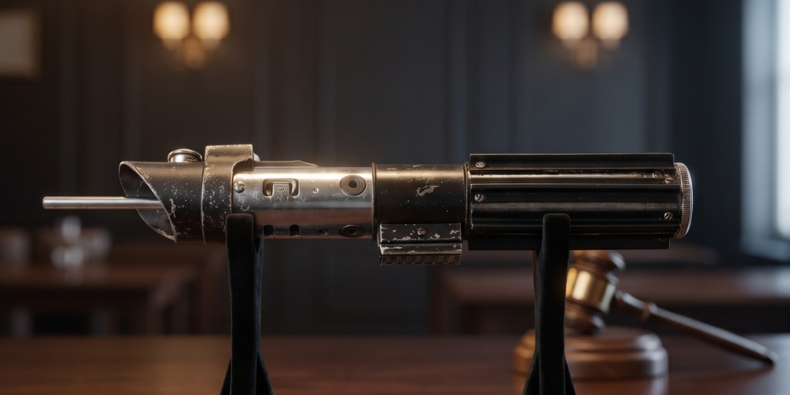

Geekotidien · Édition du 16 novembre 2026
Sabre Dark Vador
Le sabre vendu 4,875 millions de dollars, nouveau record Star Wars

Le sabre laser de Dark Vador a été vendu 4,875 millions de dollars par Heritage Auctions le 12 novembre 2026. Associated Press rapporte la vente.
Ce prix constitue un record pour un objet Star Wars. L'ancien record était de 3,75 millions de dollars, pour le sabre de Luke, vendu en juillet 2026.
Le sabre a servi lors du duel de Bespin.
Le + : Le sabre a servi lors du duel de Bespin.